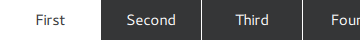

TabBar QML Type
Allows the user to switch between different views or subtasks. More...
| Import Statement: | import QtQuick.Controls 2.5 |
| Since: | Qt 5.7 |
| Inherits: |
Properties
- contentHeight : real
- contentWidth : real
- position : enumeration
Attached Properties
Detailed Description
TabBar provides a tab-based navigation model.

TabBar is populated with TabButton controls, and can be used together with any layout or container control that provides currentIndex -property, such as StackLayout or SwipeView
TabBar { id: bar width: parent.width TabButton { text: qsTr("Home") } TabButton { text: qsTr("Discover") } TabButton { text: qsTr("Activity") } } StackLayout { width: parent.width currentIndex: bar.currentIndex Item { id: homeTab } Item { id: discoverTab } Item { id: activityTab } }
As shown above, TabBar is typically populated with a static set of tab buttons that are defined inline as children of the tab bar. It is also possible to add, insert, move, and remove items dynamically at run time. The items can be accessed using itemAt() or contentChildren.
Resizing Tabs
By default, TabBar resizes its buttons to fit the width of the control. The available space is distributed equally to each button. The default resizing behavior can be overridden by setting an explicit width for the buttons.
The following example illustrates how to keep each tab button at their implicit size instead of being resized to fit the tabbar:
TabBar { width: parent.width TabButton { text: "First" width: implicitWidth } TabButton { text: "Second" width: implicitWidth } TabButton { text: "Third" width: implicitWidth } }
Flickable Tabs
If the total width of the buttons exceeds the available width of the tab bar, it automatically becomes flickable.

TabBar { id: bar width: parent.width Repeater { model: ["First", "Second", "Third", "Fourth", "Fifth"] TabButton { text: modelData width: Math.max(100, bar.width / 5) } } }
See also TabButton, Customizing TabBar, Navigation Controls, Container Controls, and Focus Management in Qt Quick Controls.
Property Documentation
contentHeight : real |
This property holds the content height. It is used for calculating the total implicit height of the tab bar.
Note: This property is available in TabBar since QtQuick.Controls 2.2 (Qt 5.9), but it was promoted to the Container base type in QtQuick.Controls 2.5 (Qt 5.12).
This property was introduced in QtQuick.Controls 2.2 (Qt 5.9).
See also Container::contentHeight.
contentWidth : real |
This property holds the content width. It is used for calculating the total implicit width of the tab bar.
Note: This property is available in TabBar since QtQuick.Controls 2.2 (Qt 5.9), but it was promoted to the Container base type in QtQuick.Controls 2.5 (Qt 5.12).
This property was introduced in QtQuick.Controls 2.2 (Qt 5.9).
See also Container::contentWidth.
position : enumeration |
This property holds the position of the tab bar.
Note: If the tab bar is assigned as a header or footer of ApplicationWindow or Page, the appropriate position is set automatically.
Possible values:
| Constant | Description |
|---|---|
TabBar.Header | The tab bar is at the top, as a window or page header. |
TabBar.Footer | The tab bar is at the bottom, as a window or page footer. |
The default value is style-specific.
See also ApplicationWindow::header, ApplicationWindow::footer, Page::header, and Page::footer.
Attached Property Documentation
[read-only] TabBar.index : int |
[read-only] TabBar.position : enumeration |
This attached property holds the position of the tab bar.
It is attached to each tab button of the TabBar.
Possible values:
| Constant | Description |
|---|---|
TabBar.Header | The tab bar is at the top, as a window or page header. |
TabBar.Footer | The tab bar is at the bottom, as a window or page footer. |
This property was introduced in QtQuick.Controls 2.3 (Qt 5.10).
[read-only] TabBar.tabBar : TabBar |
This attached property holds the tab bar that manages this tab button.
It is attached to each tab button of the TabBar.
This property was introduced in QtQuick.Controls 2.3 (Qt 5.10).